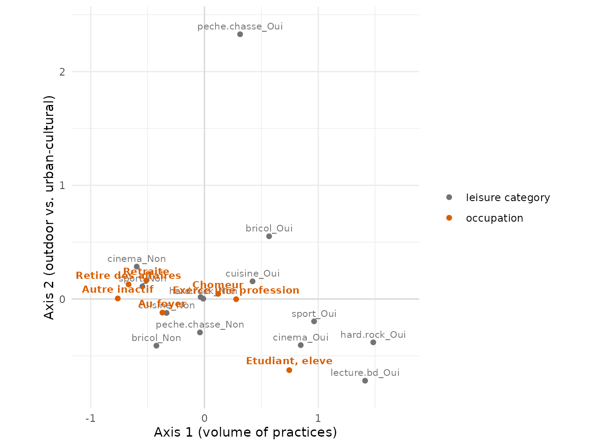
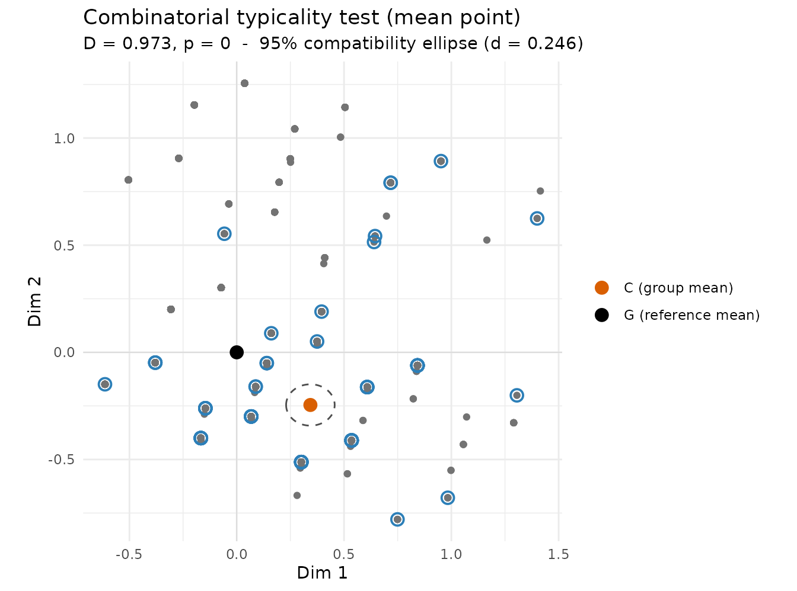

Combinatorial typicality testing on an MCA: a tutorial
Source:vignettes/typicality.Rmd
typicality.RmdWhat this tutorial is about
Geometric Data Analysis (MCA, PCA, CA, …) builds a cloud of individuals and lets us describe oppositions between groups. But description alone leaves a question open: when a group’s mean point sits away from the centre of the cloud, is that a genuine effect, or could it just be the luck of the draw?
GDAinference answers this with the combinatorial
typicality test of Le Roux, Bienaise & Durand (2019). It is
a permutation test, so it makes no assumption about the
distribution of the data: it compares the group’s observed position to
what would happen for all possible groups of the same size
drawn from the cloud. It returns two things:
- a p-value — the proportion of random groups that deviate at least as much as the observed one (small p ⇒ the group is atypical);
- a compatibility region — an ellipse showing where the group mean could plausibly lie.
Throughout, the test statistic is the Mahalanobis distance
D between the group mean and the cloud centre. As
a rule of thumb the deviation is called notable when
D ≥ 0.4. Keep that number in mind — we will see that
notable and significant are not the same thing.
We will work end to end on a real survey.
The data and the MCA
We use hdv2003 from questionr (2000
respondents to the French “Histoire de vie” survey) and seven yes/no
cultural and leisure practices. We build a standard MCA with
FactoMineR, adding sexe and
occup (activity status) as supplementary variables and
age as a supplementary numeric variable, so they do not
shape the cloud but can be located on it.
library(GDAinference)
library(FactoMineR)
library(ggplot2)
data("hdv2003", package = "questionr")
active <- c("hard.rock", "lecture.bd", "peche.chasse",
"cuisine", "bricol", "cinema", "sport")
d <- hdv2003[, c(active, "sexe", "occup", "age")]
mca <- MCA(d, quali.sup = 8:9, quanti.sup = 10, ncp = Inf, graph = FALSE)
round(mca$eig[1:3, ], 2)
#> eigenvalue percentage of variance cumulative percentage of variance
#> dim 1 0.21 21.22 21.22
#> dim 2 0.15 15.43 36.65
#> dim 3 0.15 14.68 51.33The first plane (axes 1–2) carries the main structure, so we will read the typicality tests on it. (MCA’s raw inertia rates are notoriously pessimistic; what matters here is the geometry of the plane, not the percentages.)
Reading the cloud
Before testing anything, we must understand what the axes mean — otherwise a p-value is just a number. The map below shows the active categories (grey) and the activity-status groups (orange).
cats <- function(coord, type) {
df <- as.data.frame(coord[, 1:2]); names(df) <- c("D1", "D2")
data.frame(label = rownames(df), D1 = df$D1, D2 = df$D2, type = type)
}
map <- rbind(
cats(mca$var$coord, "leisure category"),
cats(mca$quali.sup$coord[levels(hdv2003$occup), ], "occupation")
)
ggplot(map, aes(D1, D2, colour = type, label = label)) +
geom_hline(yintercept = 0, colour = "grey85") +
geom_vline(xintercept = 0, colour = "grey85") +
geom_point(size = 1.6) +
# thin out the leisure labels, but always show the (few) occupation labels
geom_text(data = subset(map, type == "leisure category"),
size = 2.8, vjust = -0.7, check_overlap = TRUE, show.legend = FALSE) +
geom_text(data = subset(map, type == "occupation"),
size = 3, fontface = "bold", vjust = -0.8, show.legend = FALSE) +
scale_colour_manual(values = c("leisure category" = "grey45",
"occupation" = "#D95F02")) +
scale_x_continuous(expand = expansion(mult = 0.18)) +
scale_y_continuous(expand = expansion(mult = 0.08)) +
coord_equal(clip = "off") + theme_minimal() +
labs(x = "Axis 1 (volume of practices)",
y = "Axis 2 (outdoor vs. urban-cultural)", colour = NULL)
Two clear oppositions emerge:
-
Axis 1 — the volume of practices. On the
right sit the “Oui” categories (
hard.rock,lecture.bd,sport,cinema); on the left, the “Non” categories. The right means does many things, the left does few. The supplementary variableagecorrelates −0.44 with this axis: older respondents are on the left (fewer practices), younger on the right. -
Axis 2 — the kind of practice. At the top,
outdoor/manual leisure (
peche.chassestands out, withbricol); at the bottom, urban-cultural leisure (lecture.bd,cinema,hard.rock).
The orange occupation points already tell a story: students sit far to the lower right (young, many and urban-cultural practices), retired people to the left (older, fewer practices), while the employed and the unemployed sit close to the centre. Typicality testing turns this visual impression into a formal statement.
A first test: are students atypical?
students <- typicality_comb(mca, group = "occup", level = "Etudiant, eleve",
axes = 1:2, seed = 1)
students
#>
#> Combinatorial typicality test (mean point)
#> ------------------------------------------
#> Reference cloud : n = 2000 points, dimensionality L = 2
#> Group cloud : n_c = 94 points
#>
#> Mahalanobis distance D = 0.9729 (D^2 = 0.9465) -- notable deviation
#> Distribution : Monte Carlo, 100,000 samples
#> p-value : 0 / 100,000 = 0
#> 95% compatibility : principal ellipsoid, scale = 0.2456The Mahalanobis distance is D ≈ 0.97 — well above the
0.4 notable limit — and the p-value is ≈ 0: among all groups of
94 individuals one could draw from the cloud, essentially none deviates
as much as the students do. Students are atypical, and
the map tells us how: they are pulled toward the “young / many
/ urban-cultural” corner.
The plot() method makes this geometric:
plot(students)
The dashed ellipse is the 95% compatibility region
for the students’ mean point C (orange). The cloud
centre G (black) lies far outside it, which is the
geometric face of p < 0.05. Notice how small
the ellipse is: with 2000 individuals the mean is pinned down very
precisely, so even moderate deviations become detectable. More data ⇒
smaller region ⇒ easier to certify a genuine effect.
The key lesson: significant is not notable
Let us now test every activity-status group at once, on the plane:
typicality_byvar(mca, "occup", axes = 1:2, seed = 1)
#>
#> Combinatorial typicality test by category of 'occup'
#> Cloud: n = 2000 individuals, dimensionality L = 2
#>
#> category n_c D p_value sig notable
#> Exerce une profession 1049 0.279 0.000 * no
#> Chomeur 134 0.129 0.305 no
#> Etudiant, eleve 94 0.973 0.000 * yes
#> Retraite 392 0.537 0.000 * yes
#> Retire des affaires 77 0.679 0.000 * yes
#> Au foyer 171 0.388 0.000 * no
#> Autre inactif 83 0.762 0.000 * yes
#>
#> * p <= 0.05 | 'notable': D >= 0.4 | montecarloRead this table carefully — it contains the whole philosophy of the method:
-
Chômeur (unemployed):
D ≈ 0.13, p ≈ 0.31. The deviation is tiny and not significant: the unemployed are compatible with the cloud as a whole — on this plane they look like everyone else (they sit near the centre). -
Exerce une profession (employed) and Au
foyer (homemakers):
p ≈ 0, yetD < 0.4. These deviations are statistically significant but descriptively small. With n = 1049 employed respondents, the test detects a real but minute displacement. This is the large-sample caveat that the notable threshold is designed to catch: do not mistake a significant p-value for an important effect. Always readDalongsidep. -
Students, retired, “retired from business”, other
inactive: both
notable(D ≥ 0.4) and significant. These are the genuinely atypical groups — and, reading the map, they are atypical in opposite directions along axis 1 (students young/active, retired older/less active).
This three-way reading — compatible / significant-but-small / notable and significant — is exactly what combinatorial inference is meant to support.
Practical notes
-
Which axes? The test runs in the subspace you pass
through
axes. Here we used the first plane (axes = 1:2) because that is what we interpreted. To test the deviation in the full cloud, keep all axes (ncp = Infin the MCA) and call withaxes = NULL. -
Naming vs. passing a variable. Because
occupis stored in the MCA object, we referred to it by name ("occup"). You can equally pass the vector (group = hdv2003$occup), which is the way to go for objects that do not store the variable (e.g. GDAtoolsspeMCA). -
Exact vs. Monte Carlo. With small clouds the test
enumerates all subsets (exact); with large ones like this it
draws
max_samplesof them. Setseedfor reproducible Monte Carlo p-values. -
Other GDA packages. The very same calls work on a
GDAtools
speMCA/csMCAor an ade4dudi.pca/dudi.acm— just pass that object instead of the FactoMineR one.